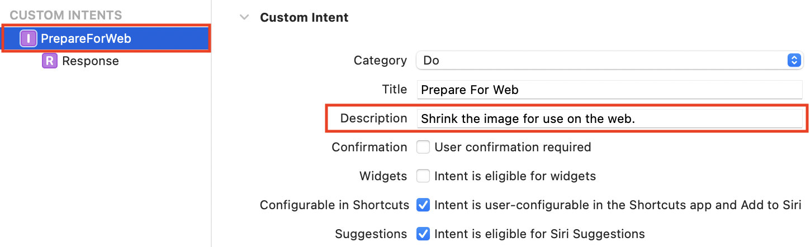

14 Automation for Your App¶
In the previous chapter, you added a graphical user interface over the top of some Terminal commands and made them much easier to use.
Now, you’re going to open some features of your app so other parts of macOS can access them and use them for automation.
You’ll do this in two ways: by providing a service to the system-wide Services menu and by publishing a shortcut for use by the Shortcuts app.
What is Automation?¶
For any app, there are two forms of automation. The first is when the app itself performs a task, especially when that task would have been long, tedious or finicky. ImageSipperalready does this. Imagine how boring and time-consuming it would be to generate a thumbnail for every image in a large folder. Now, you can do it with just a few clicks.
The other way is to make various features of your app available to other apps or system services so your app can become part of an automated workflow. This is what you’re going to enable in this chapter.
When looking at automation on macOS, there are several alternatives. One of the most common is the Services menu. This is a submenu that appears in every app’s own app menu. You can also find Services in contextual menus. Right-click any piece of text or any file to see what services you can use. What you see in the menu depends on what you’ve selected and what apps you’ve installed.
Another possibility for automation is scripting. You can use shell scripts, AppleScripts and various other languages — even Swift! Scripting languages are outside the scope of this book, but they’re another facet of automation.
The final option is through automation apps. Apple provides two such apps. Automatorhas been around for a while, but at WWDC 2021, Apple introduced Shortcuts for the Mac. Previously, this was available on iOS.
Automator can be useful, and it comes with an extensive library of actions, as well as the ability to add custom actions using AppleScript or shell scripts. However, the Shortcuts app enables you to publish actions directly from your app.
In this chapter, you’ll supply a service and publish a shortcut.
Adding a Service¶
First, you’ll add a service. In Chapter 10, “Creating A Document-Based App”, you set up file types so the app could open Markdown files. ImageSipper isn’t a document-based app, so you can’t do this. Instead, you’re going to add an Open in ImageSipper menu item to the Services menu. This will open the selected image file or folder in the app, launching the app if necessary.
Adding a service to your app takes two steps. First, you’ll edit the app’s Info.plist so its menu item appears in the Services menu when appropriate. Second, you’ll write the code to handle the Services menu selection.
Editing Info.plist¶
Open your project from the last chapter or use the starter project from this chapter’s projects folder in the downloaded materials.
In older versions of Xcode, you’d see the Info.plist file in the Project navigator, but in Xcode 13, it’s hidden until you change it in the target settings.
Select the project at the top of the Project navigator, click the ImageSipper target and choose Info from the tabs across the top.
Right-click the last line in the Custom macOS Application Target Properties section and select Add Row from the popup menu:
Start typing Services (with an upper case S) and press Return to select it when autocomplete finds it. Press Return once more to add the new row. This adds a new array to your Info.plist.
Now, you can select Info.plist in the Project navigator. It’s easier to edit it from there as Xcode hides the default values. Option-click the disclosure arrow beside Services to expand it fully:

Your new Services array has a single element, labeled Item 0. It’s a dictionary with two required elements. These are currently blank, waiting for values.
Filling in the Service Item¶
Select the Menu item title row and then click in its Value column to start editing. This sets the title of the item in the Services menu. Enter Open in ImageSipper and press Return to move to the next field.
This is the Instance method name and holds the name of the method that the service will call. You don’t have a method yet, but set the name to openFromService:
Now, you’ll add four more elements (rows) to the Item 0 dictionary:
- Incoming service port name: String
- Send Types: Array
- NSSendFileTypes: Array
- NSRequiredContext: Dictionary
Note
There are multiple ways of adding rows to Info.plist, and this section deliberately shows several different options. Once you know what’s possible, you can choose your favorite.
Right-click in the blank space below the entries and select Add Row. Choose Incoming service port name and set its value to ImageSipper. This tells the service the name of the app to call.
Next, right-click the last row, select Add Row and choose Send Types from the menu. Press Return to add this array property.
Expand Send Types and set the value for Item 0 to string. This means the service method receives a String when an application requests this service.
The send type is an NSPasteboard.PasteboardType. Apple’s NSPasteboard.PasteboardType documentation lists the possible types.
So far, the rows you’ve added have had names that the editor knows and could autocomplete. Next, you’ll add some unknown entries.
Note
You’re about to add two Services Properties from this list.
Start by collapsing Send Types and clicking the small + button beside the name. If you did this with Send Types expanded, you’d be adding another element to its array. By collapsing first, you’re adding to the Services ▸ Item 0 dictionary.
Set the name of the new row to NSSendFileTypes. Press Return and the type should be set to Array, but if it’s still String, click that and select Array from the contextual menu.
Expand the new array and click its + button so you have two elements in the array. The service will allow you to select either image files or folders, and this is where you set that up.
Set the value for NSSendFileTypes ▸ Item 0 to public.folder. Then, set the value for NSSendFileTypes ▸ Item 1 to public.image:

Apple provides a list of System-Declared Uniform Type Identifiers you can use to work out what to add here.
You’ve now set up a service with a menu item title of Open in ImageSipper that provides a String to a method called openFromService in the ImageSipper app. It will only work with file types that are folders or image files.
Setting the Context¶
You’re nearly finished with Info.plist. There’s just one more step, and it’s an important one. Lots of apps on your Mac have services, and you don’t want the Services menu showing them all every time. So you set a context for the service to tell the system when it’s appropriate to show your particular service. In this case, you only want to show it when the user selects an image file or a folder.
Collapse NSSendFileTypes and click its + button. Type in the name for the new row: NSRequiredContext. Its default type is Array, so click that and change its type to Dictionary:

Expand the new row. When you added elements to an array, Xcode assigned them names like Item 0, Item 1 and so on. With a dictionary, you get to set the name and the value.
Change the name of the New item dictionary element to NSTextContent and the value to FilePath. Now, the Services menu knows only to show your menu item when you have a file path selected and when that file path points to an image or to a folder.
That was a lot of setup work! To check the raw data, right-click Info.plist in the Project navigator and select Open As ▸ Source Code to see the XML:
<?xml version="1.0" encoding="UTF-8"?>
<!DOCTYPE plist PUBLIC "-//Apple//DTD PLIST 1.0//EN" "http://www.apple.com/DTDs/PropertyList-1.0.dtd">
<plist version="1.0">
<dict>
<key>NSServices</key>
<array>
<dict>
<key>NSMenuItem</key>
<dict>
<key>default</key>
<string>Open in ImageSipper</string>
</dict>
<key>NSMessage</key>
<string>openFromService</string>
<key>NSPortName</key>
<string>ImageSipper</string>
<key>NSSendTypes</key>
<array>
<string>string</string>
</array>
<key>NSSendFileTypes</key>
<array>
<string>public.folder</string>
<string>public.image</string>
</array>
<key>NSRequiredContext</key>
<dict>
<key>NSTextContent</key>
<string>FilePath</string>
</dict>
</dict>
</array>
</dict>
</plist>
Note
When adding entries using autocomplete, you get a friendly name like Incoming service port name. Behind the scenes, this has an AppKit title: NSPortName in this case. The XML file only shows the AppKit titles.
Click the back button to return to the property list view.
That completes the first part of the setup. You’ve configured the Info.plist, and that’s enough to start testing.
Testing the Services Menu¶
Build and run the app now. It looks unchanged, but behind the scenes, it’s registered your new service. Switch to Finder, select any image file and right-click. Do you see a Services menu or an Open in ImageSipper item at the end of the contextual menu? What about if you right-click a folder?

If you don’t see this, don’t panic! Despite all your hard work, Open in ImageSipper may not show up. You haven’t done anything wrong, but macOS only scans for new services periodically, so yours may not appear immediately.
To fix this, you’ll use the pbs Terminal command. Open Terminal, and enter man pbs to read what it does. When you’ve finished, press q to exit.
If you run the pbs command directly, Terminal returns zsh: command not found: pbs. This is because pbs is only intended for use while debugging services, and so macOS has hidden it in a folder that Terminal doesn’t scan for commands.
Still in Terminal, run these two commands that use the full path:
/System/Library/CoreServices/pbs -flush
/System/Library/CoreServices/pbs -update
You’ve forced macOS to reset and refresh the list of services, so now Open in ImageSipper appears. As well as right-clicking files and folders directly, test selecting an image file or folder and opening the Finder ▸ Services menu:

Select a text file and confirm that Open in ImageSipper does not appear, in either the Finder ▸ Services menu or the right-click contextual menu.
Your app now publishes a service that’s only available when appropriate. Great! If you try to use it right now, ImageSipper opens, but then Finder freezes for while, because you haven’t set up the method yet. So now, you need to handle the incoming service call.
Handling the Service Call¶
Before your app can respond to a service call, it needs a servicesProvider. Open ImageSipperApp.swift and add this new class at the bottom:
class ServiceProvider {
}
You can use the class already, even though it’s empty.
At the top of ImageSipperApp, declare a property to hold the ServiceProvider:
var serviceProvider = ServiceProvider()
And after setting the environmentObject on ContentView, add this:
.onAppear {
NSApp.servicesProvider = serviceProvider
}
Now, when ContentView appears, it’ll set NSApp’s servicesProvider to the new instance of your ServiceProvider class. NSApp is shorthand for NSApplication.shared, which is a reference to the running app.
Next, you’ll fill in the method. In Info.plist, you set the method name to openFromService, so add this to the ServiceProvider class:
// 1
@objc func openFromService(
_ pboard: NSPasteboard,
userData: String,
error: NSErrorPointer
) {
// 2
let fileType = NSPasteboard.PasteboardType.fileURL
guard
// 3
let filePath = pboard.pasteboardItems?.first?
.string(forType: fileType),
// 4
let url = URL(string: filePath) else {
return
}
// 5
NSApp.activate(ignoringOtherApps: true)
// handle url here
}
What’s happening here?
- Declare the method using the expected name. You must mark the method as
@objcfor the service to be able to access it. The arguments to the method are the arguments that every service call sends. - The only argument you’re interested in is the
NSPasteboard. Services pass data around using an internal pasteboard. The type of data you want to get from the pasteboard is a file URL, as you specified in Info.plist. - Check the first item in the pasteboard for a
Stringof the correct type. - If you get a
String, convert it to aURL. This is similar to how you extracted URLs from drop operations in the previous chapter. - Bring the app to the front, launching it if necessary, so it can process the URL.
Processing URLs¶
Your app receives data and — hopefully — converts it into a URL. Now what?
First, you have to work out whether the URL points to a folder or to an image file. Then, you must pass this data to one of the views. But how can ServiceProvidercommunicate with ImageEditView and ThumbsView? By using NotificationCenter!
Still in ImageSipperApp.swift, but outside any class or structure, add this extension:
extension Notification.Name {
static let serviceReceivedImage =
Notification.Name("serviceReceivedImage")
static let serviceReceivedFolder =
Notification.Name("serviceReceivedFolder")
}
This sets up names for the two different notifications you’ll use.
Next, in openFromService(_:userData:error:), replace // handle url here with:
// 1
let fileManager = FileManager.default
// 2
if fileManager.isFolder(url: url) {
// 3
NotificationCenter.default.post(
name: .serviceReceivedFolder,
object: url)
} else if fileManager.isImageFile(url: url) {
// 4
NotificationCenter.default.post(
name: .serviceReceivedImage,
object: url)
}
Stepping through this, you:
- Get the default
FileManager. - Use the
FileManagerextension to test ifurlpoints to a folder. - If it does, post the
serviceReceivedFoldernotification toNotificationCenter, passingurlas the notification’sobject. - If
urlpoints to an image file, post theserviceReceivedImagenotification.
Now, you’re detecting the service call, processing its data to get a URL and posting an appropriate notification. The next step is to have the views receive these notifications.
Receiving Notifications¶
Each of the main views will handle one of the notifications. Start with an image file URL.
Open Views/ImageEditView.swift and add this declaration at the top of ImageEditView:
let serviceReceivedImageNotification = NotificationCenter.default
.publisher(for: .serviceReceivedImage)
.receive(on: RunLoop.main)
This sets up a NotificationCenter.Publisher to receive any notifications with the serviceReceivedImage name. As this will update the UI, you receive it on the main run loop.
Next, add this at the end of body, after the onChange modifier:
// 1
.onReceive(serviceReceivedImageNotification) { notification in
// 2
if let url = notification.object as? URL {
// 3
selectedTab = .editImage
// 4
imageURL = url
}
}
What does this code do?
- Detect when the publisher receives a notification.
- Check if the notification’s object is a
URL. - Set
selectedTab, which swaps to this view if needed. - Assign
imageURLto import the image.
The process for a folder URL is very similar. Open ThumbsView.swift and add this publisher:
let serviceReceivedFolderNotification = NotificationCenter.default
.publisher(for: .serviceReceivedFolder)
.receive(on: RunLoop.main)
And below the onDrop modifier, add this:
.onReceive(serviceReceivedFolderNotification) { notification in
if let url = notification.object as? URL {
selectedTab = .makeThumbs
folderURL = url
}
}
This has been a lot of work, but now you’re ready to try it out.
Using the Service¶
Quit the app if it’s already running. Press Command-B to compile the new code — there’s no need to run it.
Switch to Finder, select an image file and choose Open in ImageSipper from the contextual menu or from the Services menu:

Now test with a folder:
Note
Depending on the number of services you have installed, you may see a Services submenu at the end of the contextual menu. If there are only a few options, Finder shows them directly.
That finishes the task of adding a service. Your service only appears when appropriate, and it communicates back to your app. Good job! And now, time to build the shortcut.
Adding a Shortcut¶
Creating a service took a lot of steps, and you had to do many of them manually with no help from autocomplete. Adding a shortcut is slightly easier because Xcode provides a file template for you to fill in.
Back in Xcode, right-click the ImageSipper folder that’s the second item in the Project navigator and select New File…. Search for intent and select the SiriKit Intent Definition File template. Click Next and save the file with the default name.
An intent is what Apple calls a service that you publish for use by Siri or by the Shortcuts app.
Make sure you’ve selected Intents.intentdefinition in the Project navigator. Click its +button and choose New Intent from the menu:

Change the name of your new intent to PrepareForWeb and, optionally, fill in the description. Its task is to process an image so that it’s suitable for use on a web page.

In the Parameters section, click + to add a new parameter.
- Change the name of the new parameter to url.
- Set its Display Name to image file and its Type to File.
- In the File Type popup, choose Image.
- Finally, set the Siri Dialog prompt to Select an image file:
Now, your intent expects a single parameter called url — a file path URL pointing to an image file.
Scroll down to the Shortcuts app section and set both Input Parameter and Key Parameter to url.
In the Summary, start typing Prepare url for web. When you’ve typed url, select the urlparameter from the autocomplete popup, then finish typing the summary.

The preview shows Prepare image file for web:
Coding the Intent¶
Now that you’ve defined your intent, press Command-B to build the app. Switch to the Report navigator and look at the most recent build log:
As you’d expect, Xcode has processed your Intents.intentdefinition file, but in the Compile phase, Xcode compiled a file called PrepareForWebIntent.swift. You can’t see this file in your project, but it defines the classes and protocols your intent needs.
And with those in place, you can start to use them.
First, switch back to the Project navigator, select the project and click the ImageSippertarget. Go to the General tab.
In the Supported Intents section, click the + button. Start typing Prepare and, when you can, select PrepareForWebintent from the autocomplete menu.

Now that the project knows you want to use this intent, it’s time to start coding for it.
Open ImageSipperApp.swift and add this at the top of the file, just after import SwiftUI:
import Intents
Next, scroll to the end of the file and define a new class:
class PrepareForWebIntentHandler: NSObject,
PrepareForWebIntentHandling {
}
This sets up the class to handle the intent, and it conforms to one of the protocols that Xcode created for you.
Note
If you’d like to have a look at the file that Xcode generated, Command-click PrepareForWebIntentHandling and select Jump to Definition.
Xcode will now complain that this class does not conform to the protocol. Click the red blob in the error marker, and use Fix to add the protocol stubs.
Adding the Intent Handlers¶
The fix adds four method stubs and causes two more errors, because Xcode supplied two versions of each method. One uses a callback and the other uses async. You want the async methods, so delete the two that are not marked as async.
Now you’re left with two methods. One handles the intent and the other resolves the url parameter. If your intent had more parameters, you’d have more resolve methods — one for each parameter.
The resolve methods are there to make sure the shortcut has supplied the parameters before you try to use them.
resolveUrl(for:) returns an INFileResolutionResult to either indicate a successful match or request further action from the user.
Replace the code placeholder in resolveUrl(for:) with:
// 1
guard let url = intent.url else {
return .confirmationRequired(with: nil)
}
// 2
return .success(with: url)
You’re creating two possible results:
- If the intent has no
urlproperty, you return anINFileResolutionResultthat asks the user to confirm theurl. - If there is a
url, you return asuccessresult.
This method could do more validation, and it could even return a different URL, but that’s not necessary here.
Now you know you’ve got a url parameter, you can move on to handling the intent.
Replace the code placeholder in handle(intent:)with:
// 1
guard let fileURL = intent.url?.fileURL else {
// 2
return PrepareForWebIntentResponse(
code: .continueInApp,
userActivity: nil)
}
// 3
// sips call here
// 4
return PrepareForWebIntentResponse(
code: .success,
userActivity: nil)
What are you doing here?
- You already checked that the intent has a
url, but thisguardconfirms it has afileURL. - If not, you return a
PrepareForWebIntentResponse, telling the intent to open the app. This custom response class was automatically generated. - If there’s a valid file URL, you call
sipsto process it. - Finally, you send back a
successresponse.
The next stage is to write the code to use sips to prepare the file.
Writing the Action¶
Open Utilities/SipsRunner.swift and add this method to SipsRunner:
func prepareForWeb(_ url: URL) async {
// 1
guard let sipsCommandPath = await checkSipsCommandPath() else {
return
}
// 2
let args = [
"--resampleHeightWidthMax", "800",
url.path
]
// 3
_ = await commandRunner.runCommand(sipsCommandPath, with: args)
}
What does this method do?
- Check for the
sipscommand path, as always. - Set up the changes to make to the image. This is a simple edit to make sure no dimension exceeds 800 pixels. As cameras and screens get bigger, many images on the internet get bigger too. And we all hate waiting for pages to load slowly on a bad network!
- Run the
sipscommand.
To call this method, open ImageSipperApp.swift and replace // sips call here with:
await SipsRunner().prepareForWeb(fileURL)
There’s one more step. You have to set up an Application Delegate to receive the intent and pass it to the handler class.
Configuring the Application Delegate¶
When using the SwiftUI architecture, you don’t get a custom application delegate by default, but you can set one up yourself.
Still in ImageSipperApp.swift, add this new class at the bottom of the file:
// 1
class AppDelegate: NSObject, NSApplicationDelegate {
// 2
func application(
_ application: NSApplication,
handlerFor intent: INIntent
) -> Any? {
// 3
if intent is PrepareForWebIntent {
return PrepareForWebIntentHandler()
}
// 4
return nil
}
}
In this code, you:
- Create a new class that conforms to the
NSApplicationDelegateprotocol. - Add the
NSApplicationDelegatemethod the system calls when it receives an intent. - Ensure this is the expected intent, and if so, return an instance of the handler class. If your app had more than one intent, you’d check for each one here.
- Return
nilfor an unknown intent.
With the class in place, set it as your app’s delegate by adding this property at the top of ImageSipperApp:
@NSApplicationDelegateAdaptor(AppDelegate.self) var appDel
This uses a SwiftUI property wrapper to allocate a custom application delegate.
And that’s it. You’ve configured your app to publish an intent the Shortcuts app can use.
Using the Shortcut¶
Press Command-B to build the app and incorporate this new code into the built product.
Next, open the Shortcuts app. If you’ve used Shortcuts on an iOS device, this will look familiar. It comes with a gallery of shortcuts and brings over your iOS shortcuts, most of which are not relevant to macOS.
Select My Shortcuts/Quick Actions in the sidebar and click the + button in the toolbar to create a new one:

In the Receive section, click Any, then click Clear in the pop-up window’s bottom bar. This unchecks everything and changes Any to No.
Then click No and check Images.
Next, change what happens if there’s no input. Click Continue and select Ask For from the popup menu. It suggests asking for Photos, which sounds perfect, but isn’t what you want. That takes you to your Photos library when you actually want to choose an image file. Click Photos and select Files from the menu.

This gives your shortcut its input; now you configure how to process it. In the column on the right, select the Apps tab and scroll down to find ImageSipper. Select it and you’ll see your Prepare for Web intent. Hover over the intent to see its Info button, then click it to see the description you entered and details of the expected input and output.

Click Add to Shortcut or drag the Prepare for Web intent into your shortcut:

This sets the url placeholder to Shortcut Input, which is exactly what you want.
One of the strengths of Shortcuts is its ability to chain actions. So now you’ve prepared your file for the web, how about revealing it in Finder?
Click Finder in the Apps list and drag Reveal Files in Finder into your shortcut. You aren’t changing the URL, so it can use the Shortcut Input too.
Now, give your shortcut a name, then click its icon to select a color and image too.

And now you’re ready to try it out.
Note
This ImageSipper shortcut writes over its input image, so duplicate the image you’re going to use to test the shortcut, then work with the copy.
Click the Play button, and because you haven’t supplied a URL, you’ll get a file dialog instead. Select a large image and click Open:
Note
The first time you run the shortcut, you might see one or more privacy dialogs. Click Always Allow or OK in all, so you don’t have to answer them again.
Your shortcut runs and Finder displays your image. The Finder preview may not update immediately, so press Command-I to confirm the image has shrunk.
Accessing Your Shortcut¶
You’ve now used your intent in a shortcut, triggered from within the Shortcuts app. This is a great place to build workflows, but there are several other ways to access this shortcut.
Back in the Shortcuts app, in your Prepare Image for Web window, click the Shortcut Details button over the right toolbar:

Select the Privacy tab to see the permissions you granted. You can reset them here any time.
The Details tab is where you select how the user can access the shortcut. Use as Quick Action and Services Menu are on by default. Check Finder to add it to the list.
Now, go back to Finder and choose a large image file. You now have three different ways to trigger the shortcut:
- Right-click the image file and select Quick Actions ▸ Prepare Image for Web.
- Select the image file and in the Finder menu, choose Services ▸ Prepare Image for Web.
- Make sure you’ve turned on Show Preview for your Finder window. Press Shift-Command-P to toggle it if not. Underneath the preview, click More… and select Prepare Image for Web.
Trouble-shooting Shortcuts¶
Shortcuts can be tricky to debug when you’re still working on the parent app. Here are some tips to help if you get stuck.
- If you can’t see your intent in the Shortcuts app, delete Xcode’s derived data and then rebuild. To do this, open Terminal and enter this command:
rm -rf ~/Library/Developer/Xcode/DerivedData
- Make sure there isn’t a bug in the command your intent calls. Repurpose an existing button to call it and make sure it works. The version of
CommandRunnerin the starter project has error reporting, which may help. - If your shortcut hangs, and neither of these other fixes work, restart your computer.
Key Points¶
- You can write an app to perform automation internally, but your app can also provide automations for macOS to use.
- Services are system-wide utilities. When setting up your app to publish a service, it’s important to make sure it only appears when appropriate.
- Apple’s Shortcuts app is an automation service that allows users to build workflows. Intents provide services from your app to a shortcut.
Where to Go From Here?¶
For more information about services, check out Apple’s Services Implementation Guide. It’s quite an old document, but still valid.
To learn about creating shortcuts, watch Meet Shortcuts for macOS from WWDC 2021.
Think about how you could add more services or intents to this app. Or maybe you’ve got another app that you’d like to automate? You have the tools now, so go out there and use them!